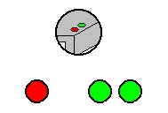
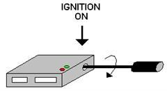
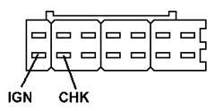

[1548] Self diagnosis NISSAN
General information
The engine control system constantly monitors the input signals from the various sensors in the injection system and compares them with defined limit values. If a signal violates these limits, the control unit stores the fault code in the memory.
The diagnostics socket
Earlier models do not have a diagnostics socket. To change mode, turn the potentiometer on the control unit. On more recent models, the diagnostics socket is located to the left under the steering column.
Appearance of the fault codes
The fault codes can be read out on LEDs on the control unit. The red LED shows the number of tens in the code; the green LED shows the number of units in the code.
Ex.

Code 12, one red blink and two green blinks
Fault code list
11 | Crankshaft position sensor |
12 | Air mass meter |
13 | Coolant temperature sensor |
14 | Road speed sensor |
21 | Ignition position signal is missing |
22 | Fuel pump |
23 | Idle switch |
24 | Full throttle switch |
31 | ECU |
33 | Lambda sensor |
34 | Knock sensor |
42 | Fuel temperature sensor |
43 | Throttle potentiometer |
51 | Injection valve |
54 | AT-signal missing |
55 | System OK |
Autodiagnosis - m/88/92
The fault codes can be read out on the LEDs on the control unit. Nissan autodiagnosis can perform five different tests, known as Modes. It is possible to see the oscillations of the lambda sond, to read fault codes, to check various switches in the system, and so on.
Mode | Ignition | Engine | Function |
I | ON | ON | Mixture ratio check, Monitor A* |
II | ON | ON | Mixture ratio check, Monitor B* |
III | ON | ON | Fault codes |
IV | ON | OFF/ON | Switch ON/OFF function check |
V | ON | ON | Real-time diagnosis |
There are five different autodiagnosis modes. To change mode, turn a potentiometer on the control unit.
Mode I | Mixture ratio check, Monitor A* |
Mode II | Mixture ratio check, Monitor B* |
Mode III | Fault codes |
Mode IV | Switch ON/OFF function check |
Mode V | Real-time diagnosis |
* Mode I and II only on cars with catalytic converter and lambda sond
Changing mode
1. | Switch on the ignition or start the engine |
2. | Turn the potentiometer fully clockwise |
3. | When the diodes have blinked the correct number of times, turn the potentiometer fully counter-clockwise (One blink for Mode I, two blinks for Mode II, etc.) |


Changing mode
NOTE: When the ignition is switched off, the control unit exits autodiagnosis.
Changing mode
1. | Switch on the ignition |
2. | Connect a jumper between IGN and CHK in the diagnostics socket for at least two seconds |
3. | Remove the jumper. Autodiagnosis is now in Mode I |
4. | Connect a jumper between IGN and CHK in the diagnostics socket for at least two seconds |
5. | Remove the jumper. Autodiagnosis is now in Mode II |
NOTE: When the ignition is switched off, the control unit exits autodiagnosis.
Mode I - m/88-92
Mixture ratio check, Monitor A
Shows the alternations of the lambda sond between lean and rich signal.
1. | Switch on the ignition |
2. | Set the autodiagnosis to Mode I (1 blink) |
3. | Start the engine |
4. | Observe the green LED on the control unit |
5. | The LED should blink regularly when the engine is warm |
6. | Switch off the ignition |
The lambda sond in an open circuit
- The LED remains lit or unlit
The lambda sond in a closed circuit
- The LED should blink regularly with the oscillations of the lambda sond
- LED lit for lean mixture
- LED unlit for rich mixture
Mode II - m/88-92
Mixture ratio check, Monitor B
Shows how the control unit adapts the fuel-air mixture, known as the adaptation.
1. | Switch on the ignition |
2. | Set the autodiagnosis to Mode II (two blinks) |
3. | Start the engine |
4. | Observe the red LED on the control unit |
5. | The LED should blink regularly and at the same time as the green LED when the engine is warm |
6. | Switch off the ignition |
The lambda sond in an open circuit
- The LEDs remain lit or unlit
The lambda sond in a closed circuit
- The LED should blink regularly in time with the green LED
- LED lit for over-lean mixture
- LED unlit for over-rich mixture
Mode III - m/88-92
Autodiagnosis blink codes
The fault codes can be read out on LEDs on the control unit. The red LED shows the number of tens; the green LED shows the number of units.
1. | Start the engine |
2. | Set the autodiagnosis to Mode III (three blinks) |
3. | Observe the LEDs on the control unit |
4. | Switch off the ignition |
Code 55 means that there are no faults stored in the control unit.
Mode IV - m/88-92
ON/OFF function check of switches
Check the idling contact, the start signal and the speed sensor.
1. | Switch on the ignition |
2. | Set the autodiagnosis to Mode IV (four blinks) |
3. | Press the accelerator pedal - The red LED lights up |
4. | Start the engine - The red LED lights up |
5. | Jack up the car and drive faster than 20 km/h - The green LED lights up |
6. | Switch off the ignition |
Mode V - m/88-92
Real-time diagnosis, driving test
Monitors the crankshaft sensor, ignition pulses and air volume meter in service.
1. | Start the engine |
2. | Set the autodiagnosis to Mode V (five blinks) |
3. | Test-drive the car |
4. | The LEDs on the control unit must have been unlit for at least five minutes |
5. | Switch off the ignition |
Possible faults
Red LED blinking: | Crankshaft position sensor signal faulty |
Green LED blinks twice: | Air volume meter signal faulty |
Green LED blinks four times: | Ignition pulses faulty |
Mode I - m/93 >>
Filament lamp check
1. | Switch on the ignition |
2. | Connect a jumper between IGN and CHK in the diagnostics socket for at least two seconds |
3. | Remove the jumper. Autodiagnosis is now in Mode I Filament lamp check |
4. | Check that the engine check lamp is lit * |
5. | Switch off the ignition |
* If the engine check lamp is not lit, the lamp is faulty.
Checking the control unit
1. | Switch on the ignition |
2. | Connect a jumper between IGN and CHK in the diagnostics socket for at least two seconds |
3. | Remove the jumper |
4. | Start the engine. Autodiagnosis is now in Mode I Control unit check |
5. | Check that the engine check lamp is unlit * |
6. | Switch off the ignition |
* If the engine check lamp is lit, the control unit is faulty.
Mode II - m/93 >>
Fault codes
1. | Switch on the ignition |
2. | Connect a jumper between IGN and CHK in the diagnostics socket for at least two seconds |
3. | Remove the jumper |
4. | Connect a jumper between IGN and CHK in the diagnostics socket for at least two seconds |
5. | Remove the jumper. Autodiagnosis is now in Mode II Fault codes |
6. | Read off the fault codes on the engine check lamp |
7. | Switch off the ignition |
Fault code listNissan_Felkodslista93
Mixture ratio check
1. | Switch on the ignition |
2. | Connect a jumper between IGN and CHK in the diagnostics socket for at least two seconds |
3. | Remove the jumper |
4. | Connect a jumper between IGN and CHK in the diagnostics socket for at least two seconds |
5. | Remove the jumper |
6. | Start the engine. Autodiagnosis is now in Mode II Mixture ratio check |
Check that the engine check lamp blinks regularly * | |
7. | Switch off the ignition |
* With the engine warm and running at 2000 rpm, the engine check lamp must flash at least five times per 10 seconds
Erase fault codes
Correct any faults in the system before deleting the fault codes.
The fault codes are erased automatically Mode IV or V has been performed.
The diagnostics socket
Earlier models do not have a diagnostics socket. To change mode, turn the potentiometer on the control unit. On more recent models, the diagnostics socket is located to the left under the steering column.

Erase fault codes
1. | Read the fault codes in Mode II |
2. | Do not turn of the ignition |
3. | Put a jumper between IGN and CHK for min 2 seconds |
4. | Release the loop and the fault codes are erased |
Autodiagnosis - m/93 >>
There are two different autodiagnosis modes. Each mode has two different states, depending on whether or not the engine is running. The mode is changed by connecting a jumper between IGN and CHK in the diagnostics socket.
Mode I | Filament lamp check / Control unit check |
Mode II | Fault codes / Mixture ratio check |
Appearance of the fault codes
The fault codes can be read out on the engine check lamp on the instrument panel or on the red LED on the control unit. The long blinks (0.6 s) show the number of tens in the code; the short blinks (0.3 s) show the number of units in the code.
Ex.
0.6s 0.6s 0.6s 0.9s 0.3s 0.3s 0.3s 0.3s 0.3s
Code 23, two long blinks and three short blinks
Fault code list
11 | Crankshaft position sensor |
12 | Air mass meter |
13 | Coolant temperature sensor |
14 | Road speed sensor |
21 | Ignition position signal missing |
22 | Fuelpump |
23 | Idle switch |
24 | Full throttle switch |
31 | ECU |
33 | Lambda sensor |
34 | Knock sensor |
42 | Fuel temperature sensor |
43 | Throttle potentiometer |
51 | Injection valve |
54 | AT-signal missing |
55 | System OK |